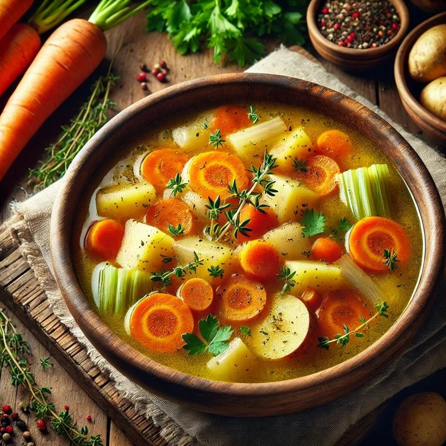
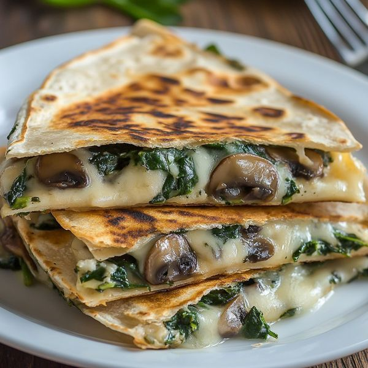
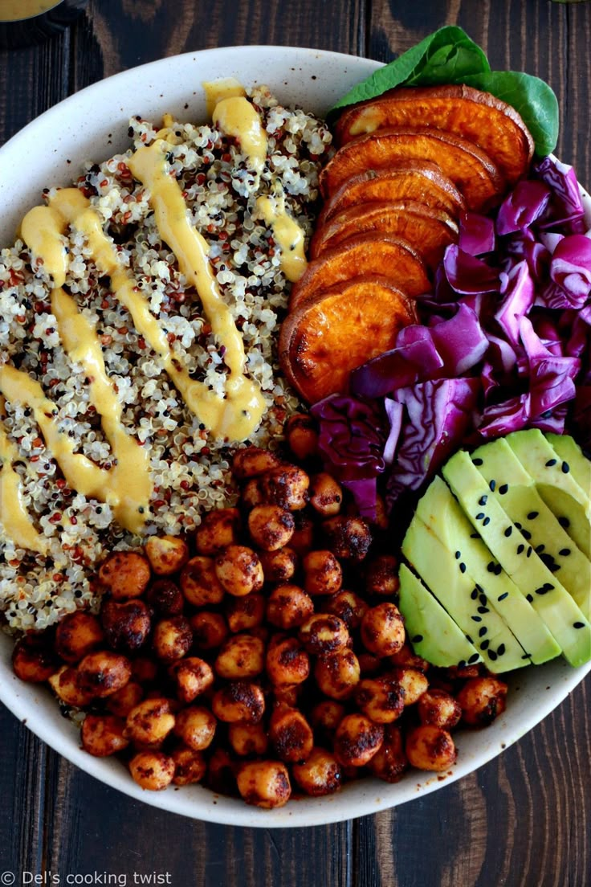

Lentil Walnut Loaf Vegan
Ingredients
- 1 cup dry green lentils
- 1 cup walnuts, finely chopped
- 1 onion, diced
- 2 cloves garlic, minced
- 1 cup rolled oats
- 2 tbsp tomato paste
- 1 tbsp soy sauce
- 1 tsp thyme
Instructions
- Cook lentils until tender (about 25 mins), drain
- Sauté onion and garlic until soft
- Combine all ingredients in bowl, mix well
- Press into greased loaf pan
- Bake at 375°F (190°C) for 45 mins
Alternative: Replace walnuts with sunflower seeds for nut-free version

Quinoa Stuffed Peppers Vegan
Ingredients
- 4 large bell peppers
- 1 cup quinoa, cooked
- 1 can black beans, drained
- 1 cup corn kernels
- 1 tsp cumin
- 1/2 cup salsa
- 1 avocado (for serving)
Instructions
- Cut tops off peppers and remove seeds
- Mix quinoa, beans, corn, cumin and salsa
- Stuff peppers with mixture
- Bake at 375°F (190°C) for 25-30 mins
- Top with avocado slices before serving

Vegetable Lasagna
Ingredients
- 9 lasagna noodles
- 2 cups ricotta cheese (or tofu ricotta)
- 2 cups spinach, chopped
- 1 zucchini, sliced
- 1 eggplant, sliced
- 3 cups marinara sauce
- 1 cup mozzarella (optional)
Instructions
- Cook noodles according to package
- Layer noodles, ricotta, vegetables and sauce
- Repeat layers, ending with sauce
- Top with mozzarella if using
- Bake covered at 375°F (190°C) for 40 mins
- Uncover and bake 5 more mins
Vegan Option: Use tofu ricotta and vegan cheese

Chickpea Salad Sandwich Vegan
Ingredients
- 2 cans chickpeas, drained
- 1/4 cup vegan mayo
- 1 stalk celery, diced
- 2 green onions, chopped
- 1 tsp Dijon mustard
- 1/2 tsp paprika
- 8 slices whole grain bread
- Lettuce and tomato for serving
Instructions
- Mash chickpeas with fork or potato masher
- Mix with all other ingredients except bread
- Season with salt and pepper to taste
- Serve on bread with lettuce and tomato

Sweet Potato Burgers Vegan
Ingredients
- 2 cups mashed sweet potato
- 1 can black beans, drained
- 1/2 cup breadcrumbs
- 1 tsp cumin
- 1/2 tsp smoked paprika
- 1 tbsp olive oil
- 6 whole wheat buns
Instructions
- Mash beans with sweet potato
- Add spices and breadcrumbs, mix well
- Form into 6 patties
- Chill for 30 mins (optional but helps firm up)
- Cook in oiled pan 5-6 mins per side
- Serve on buns with favorite toppings

Tofu Vegetable Stir Fry Vegan
Ingredients
- 1 block firm tofu, pressed and cubed
- 2 cups broccoli florets
- 1 bell pepper, sliced
- 1 carrot, julienned
- 3 tbsp soy sauce
- 1 tbsp maple syrup
- 1 tsp ginger, grated
- 2 cups cooked brown rice
Instructions
- Stir-fry tofu in oil until golden, set aside
- Stir-fry vegetables 5-6 mins until crisp-tender
- Add sauce ingredients and tofu back to pan
- Cook 2 mins until sauce thickens slightly
- Serve over brown rice
Alternative: Replace tofu with chicken for non-vegan version

Avocado Chickpea Salad Vegan
Ingredients
- 2 avocados, diced
- 1 can chickpeas, drained
- 1/2 red onion, diced
- 1/4 cup cilantro, chopped
- 2 tbsp lime juice
- 1 tsp cumin
- 4 cups mixed greens
Instructions
- Gently mix all ingredients except greens
- Season with salt and pepper
- Serve over bed of mixed greens
- Optional: serve with whole grain crackers

Hearty Vegetable Soup
Ingredients
- 1 onion, diced
- 2 carrots, sliced
- 2 stalks celery, chopped
- 3 cloves garlic, minced
- 1 can diced tomatoes
- 6 cups vegetable broth
- 2 cups chopped cabbage
- 1 tsp Italian seasoning
Instructions
- Sauté onion, carrots and celery 5 mins
- Add garlic, cook 1 min more
- Add remaining ingredients
- Simmer 25-30 mins until vegetables are tender
- Season with salt and pepper to taste
Variation: Add 1 cup cooked lentils for extra protein

Quinoa Stuffed Avocados Vegan
Ingredients
- 2 avocados, halved
- 1 cup cooked quinoa
- 1/2 cup black beans
- 1/4 cup corn
- 1 tbsp lime juice
- 1/4 tsp chili powder
- Fresh cilantro for garnish
Instructions
- Scoop out some avocado to make room for filling
- Mix quinoa, beans, corn, lime juice and spices
- Spoon mixture into avocado halves
- Garnish with cilantro
- Serve immediately

Vegetable Coconut Curry Vegan
Ingredients
- 1 tbsp coconut oil
- 1 onion, diced
- 3 cloves garlic, minced
- 1 tbsp curry powder
- 1 can coconut milk
- 2 cups cauliflower florets
- 1 sweet potato, cubed
- 1 cup chickpeas
- 2 cups cooked brown rice
Instructions
- Sauté onion and garlic in oil 3 mins
- Add curry powder, cook 1 min
- Add coconut milk and vegetables
- Simmer 20 mins until vegetables are tender
- Serve over brown rice

Spinach Mushroom Quesadillas
Ingredients
- 4 whole wheat tortillas
- 2 cups spinach, chopped
- 1 cup mushrooms, sliced
- 1 cup shredded cheese (or vegan cheese)
- 1/2 tsp garlic powder
- 1/4 cup salsa for serving
Instructions
- Sauté mushrooms and spinach until wilted
- Spread cheese on half of each tortilla
- Top with vegetable mixture
- Fold tortillas in half
- Cook in dry skillet 2-3 mins per side until golden
- Serve with salsa

Rainbow Buddha Bowl Vegan
Ingredients
- 1 cup cooked quinoa
- 1/2 cup chickpeas, roasted
- 1 cup mixed greens
- 1/2 avocado, sliced
- 1/2 cup shredded carrots
- 1/4 cup hummus
- 1 tbsp lemon-tahini dressing
Instructions
- Divide quinoa between two bowls
- Arrange remaining ingredients in sections
- Drizzle with dressing
- Serve with extra dressing on the side
Variations: Use any seasonal vegetables you have available

Vegetable Paella Vegan
Ingredients
- 1 tbsp olive oil
- 1 onion, diced
- 1 red bell pepper, sliced
- 2 cups short grain rice
- 1 tsp smoked paprika
- 4 cups vegetable broth
- 1 cup green beans
- 1 cup artichoke hearts
- Lemon wedges for serving
Instructions
- Sauté onion and bell pepper in oil 5 mins
- Add rice and paprika, stir 1 min
- Add broth and bring to boil
- Reduce heat, add vegetables
- Simmer 20 mins until rice is tender
- Let stand 5 mins before serving with lemon

Stuffed Zucchini Boats
Ingredients
- 2 large zucchinis
- 1 cup cooked quinoa
- 1/2 cup marinara sauce
- 1/4 cup grated Parmesan (or nutritional yeast)
- 1 tsp Italian seasoning
- 1/4 cup breadcrumbs
Instructions
- Cut zucchinis in half lengthwise, scoop out centers
- Mix quinoa, marinara, and seasonings
- Fill zucchini halves with mixture
- Sprinkle with breadcrumbs and cheese
- Bake at 375°F (190°C) for 20-25 mins

Mediterranean Wrap Vegan
Ingredients
- 2 whole wheat tortillas
- 1/2 cup hummus
- 1/2 cucumber, sliced
- 1/4 red onion, thinly sliced
- 1/2 cup cherry tomatoes, halved
- 1/4 cup kalamata olives
- 1 cup baby spinach
Instructions
- Spread hummus on tortillas
- Layer with remaining ingredients
- Roll up tightly
- Cut in half and serve
Variation: Add feta cheese for non-vegan version